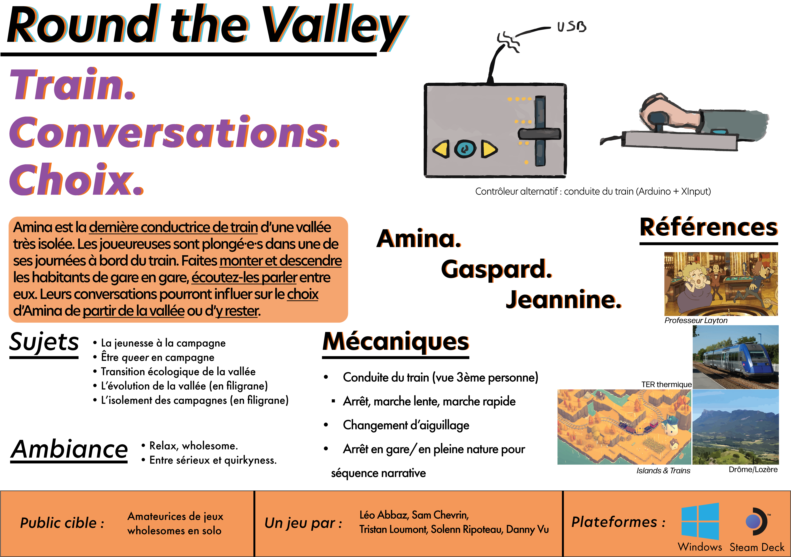
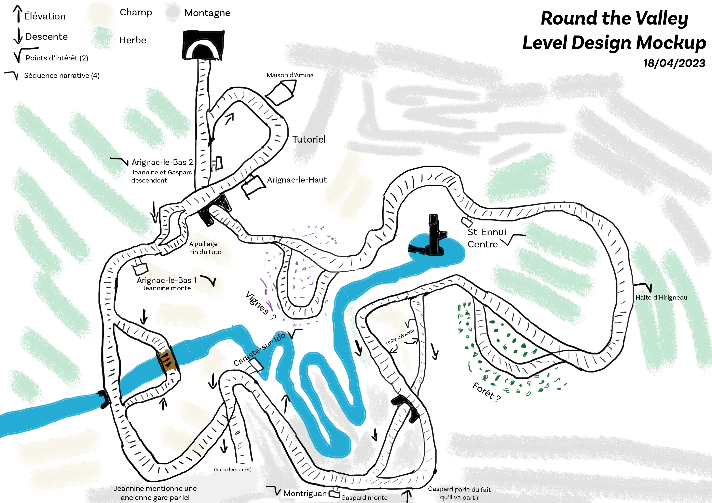

'Round the Valley
Présentation et déroulement du projet.
Présentation
- Équipe de 5
- 3 mois
- Exercice du master JMIN
- Unity, Git, Notion, Yarn Spinner
'Round the Valley est un jeu de conduite de train mêlé à un visual novel. Entre montagne et vallée, incarnez Amina, la dernière conductrice de train de la vallée de l'Esbor, faisant face à un dilemme. Peut-être que les conversations de ses passagers l'aideront à faire un choix.
Déroulement du projet
Le pitch du jeu a été co-construit avec Solenn Ripoteau, la Game Artist du projet. Nous voulions faire un jeu qui parlait de la vie à la campagne, vu que nous en venons. Les trains, parce que ce sont des objets fascinants, et que c'est un de mes centres d'intérêts. Puis, les autres thèmes ont été rajoutés en début de pré-production par le reste de l'équipe, pour faire de 'Round the Valley un jeu à notre image.
La présence du contrôleur alternatif, un levier de train, était pour nous nécessaire afin de donner une plus grande immersion lors d'une session de jeu. Pour autant, il est tout à fait possible de jouer avec un clavier ou une manette, et c'était une des conditions que nous avions posée dès le premier jour.
Sur le projet, j'ai pris la charge du Level Design et du Narrative Design. Le Game Design a été réfléchi collectivement, ainsi que pour le fonctionnement du contrôleur alternatif.
Narrative Design
Les deux premières semaines du projet ont été passées sur le worldbuilding, à construire des personnages et leurs vies. Jeannine et Gaspard, les deux personnages principaux du jeu, sont rapidement apparus, mais leurs backgrounds n'étaient pas encore bien définis. Il fallait d'abord commencer par couper tout le superflu. Beaucoup de superflu. Ensuite, rendre le background de ces deux rescapés des coupes plus positif. C'est passé par une discussion en équipe du worldbuilding et un tableau réalisé sur Canva par notre producer, qui nous a mené au produit final.
Les décisions concernant le narrative design ont impliqué Tristan (producer), Solenn (game artist) et moi, pour coordonner nos pôles avec le message transmis par notre jeu, dans un cercle vertueux. L'écriture des dialogues a été faite en tandem avec Tristan, à l'aide de Yarn Spinner. Écrire en tandem demande un certain effort, mais dans notre cas, il y a eu peu de friction. Nous voulions tous les deux nous essayer à l'écriture et le résultat semble plaire à tout le monde, ce qui n'aurait peut-être pas été la même chose si j'étais seul à écrire. J'écris les bases des dialogues, et Tristan les améliore ou les allongent. Ce tandem nous permet de faire apparaître nos spécificités : des lignes de dialogues plus terre-à-terre et mélancoliques pour moi, de la positivité et un lyrisme dans l'éloge du slow living pour Tristan.
Level Design
Les premières ébauches de level design ont été réalisées durant la même période que le worldbuilding, sur Photoshop. Voici la dernière version.
Entre temps, des éléments ont été ajoutés ou retirés de cette carte : une meilleure section de tutoriel, un lac, des gares/haltes et des embranchements en moins. Le dessin n'étant clairement pas mon fort, ce mockup sert surtout à donner une idée au reste de l'équipe de ce que je veux faire.
L'outil Terrain d'Unity a permis de modeler l'environnement assez facilement, mais ses modifications destructives pénalisent grandement le workflow. Il était plus simple pour moi de continuer sur un terrain 4 fois trop grand que de recommencer de zéro, même si ça a un peu pénalisé Solenn et moi sur le long terme au niveau de la production d'assets et l'habillage du terrain.
Notre programmeur, Danny, a utilisé le système des splines intégré à Unity 2022 pour me rendre la vie plus simple dans la pose des rails tout autour du terrain. Le plugin de Unity n'est pour autant pas parfait, et il a fallu revenir plusieurs fois sur le circuit pour fixer quelques points du spline faisant saccader le train. J'ai également fait des tests avec le character controller pour déterminer les valeurs adéquates pour l'accélération, la vitesse et le freinage du train. Enfin, j'ai choisi les angles de vues Cinemachine que l'on observe lors des dialogues en gare.
Voici notre soutenance de projet (en anglais, timecodé) :